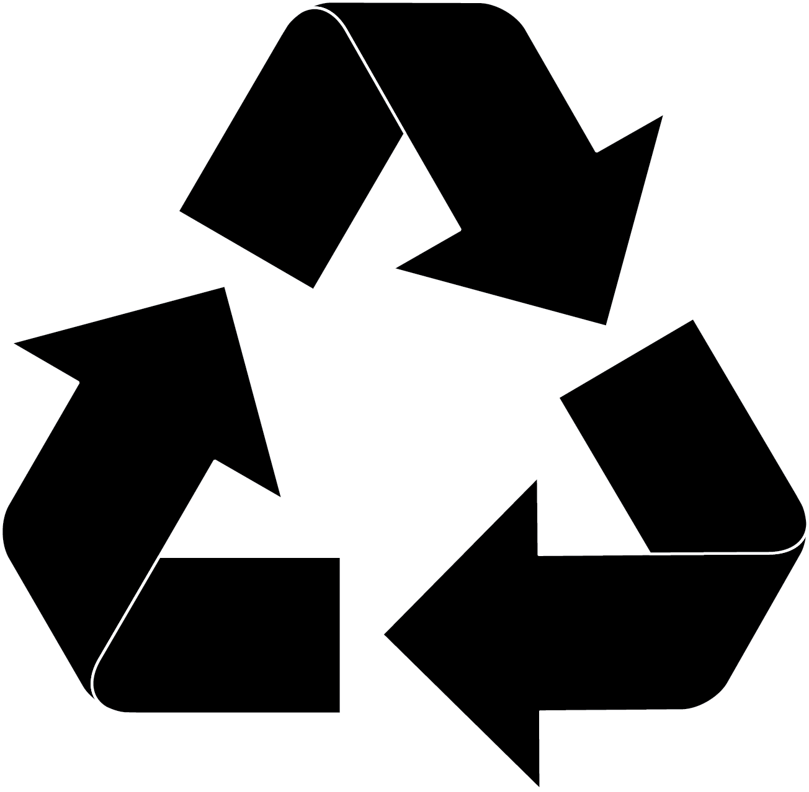
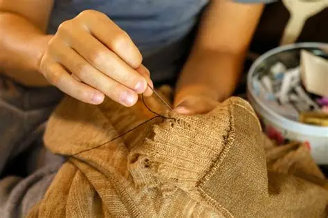
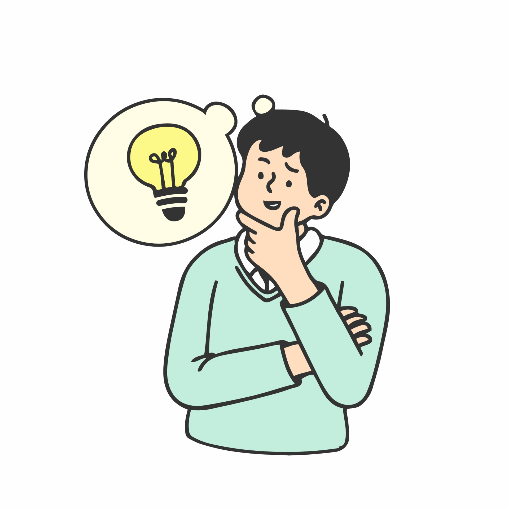
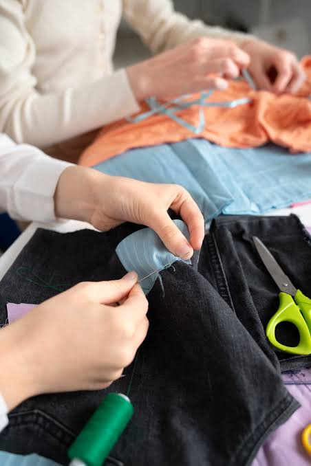
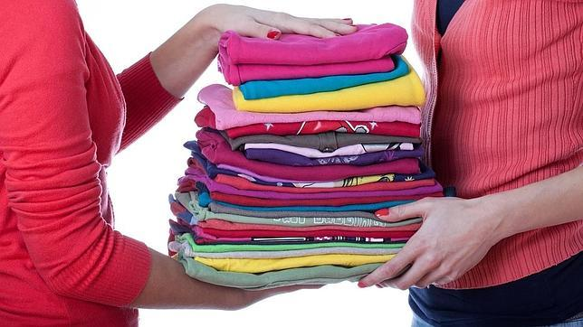
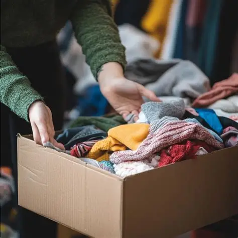

COMPRAR
Antes de comprar una prenda, podemos preguntarnos si realmente la necesitamos.

CONSUMO CONSCIENTE
La ropa que compramos, usamos y descartamos tiene un impacto. Conocer nuestros hábitos nos permite tomar decisiones más conscientes.
CONOCER MÁS
Antes de comprar una prenda, podemos preguntarnos si realmente la necesitamos.
Usar una prenda durante más tiempo ayuda a aprovechar mejor los recursos utilizados para producirla.

Intercambiar, donar o comprar ropa de segunda mano son alternativas al consumo constante.
Lavar y conservar correctamente nuestras prendas puede ayudar a extender su vida útil.

FAST FASHION
El fast fashion es un modelo de producción y consumo de ropa caracterizado por ofrecer nuevas colecciones con mucha frecuencia y a precios generalmente bajos.
Este modelo puede favorecer el consumo frecuente y el descarte rápido de prendas. Por eso, conocer cómo consumimos ropa puede ayudarnos a tomar decisiones más conscientes.
VER ALTERNATIVAS
01Preguntate si realmente necesitás la prenda y si vas a utilizarla varias veces.
LEER MÁSComprar prendas usadas permite darles una nueva oportunidad y extender su tiempo de uso.
LEER MÁS
03Un pequeño arreglo puede permitir que una prenda siga formando parte de tu guardarropa.
LEER MÁSSeguir las indicaciones de lavado y guardado ayuda a conservar las prendas durante más tiempo.
LEER MÁS
05Intercambiar ropa con otras personas puede ser una alternativa para renovar el guardarropa.
LEER MÁS
06Si una prenda todavía está en buenas condiciones, otra persona puede aprovecharla.
LEER MÁSSuscribite para recibir consejos sobre consumo consciente.